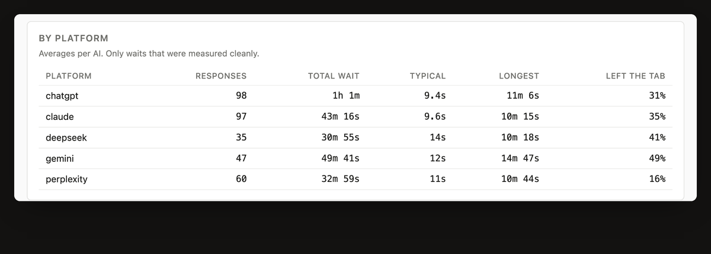
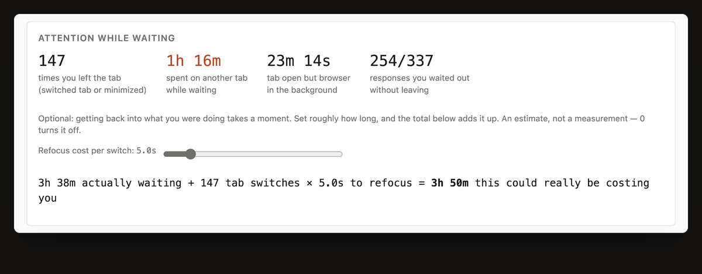

You already pay for more than one AI. Asking them the same thing means typing it five times, in five tabs. whileAI does that part for you, inside the sessions you are already signed in to.

Four steps, and you only do the first one.
Nothing to configure. whileAI uses the tabs and accounts you already have, so it never asks for a password or an API key.
One switch per AI in the extension panel. An AI you leave off receives nothing.
Write it in whichever AI you were going to use anyway. The same text goes to the others, each in its own tab, one at a time.
Type the next prompt whenever you like. If an AI is still answering, yours waits in the queue instead of colliding with it.

"ready" means that tab is signed in and can receive a prompt. If a site signs you out, the panel says so, so a prompt never disappears quietly.
Your waiting time so far sits at the top, and the full dashboard is one click away.
Every answer is timed, because waiting for AI is the part nobody measures. It runs whether or not you use the broadcast.



This matters more than any feature, so it is worth being exact.
AI sites change their pages often. If a prompt stops arriving, email me and it usually gets fixed the same week: aytarahmetyasin@gmail.com
Nothing. Every feature is free, there is no trial, and there is no paid tier waiting behind a switch.
ChatGPT, Claude, Perplexity, Gemini and DeepSeek. It only runs on those five sites and asks for no other permissions.
Yes. Read it, or check what it asks for, at github.com/Ahmetyasin/WhileAI.